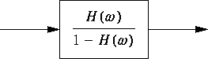

Turning PIC into HTML
Say you have a pic figure in a file
and you want to include the figure into an HTML document.
For example, here is the file pic.ms:
.EQ
delim $$
.EN
.PS
arrow
box "$space 0 {H( omega )} over {1 - H( omega )}$"
arrow
.PE
We can generate PostScript using groff,
and then use ghostscript to generate a GIF image,
but we get a full-sized 8.5 by 11-inch page for the GIF image
(or whatever size page you use with groff).
We want just the figure.
I run the following steps on a BSD/OS 3.0 system,
as it provides all the programs with a full system installation.
First generate PostScript using groff, as in
groff -e -p -ms pic.ms > file1.ps
Then use ghostscript to generate the full 8.5 by 11-inch
GIF image.
gs -q -sDEVICE=gifmono -sOutputFile=file1.gif -r150x150 file1.ps < /dev/null
You can change the resolution as desired,
depending on the amount of text in the figure, its size,
and how big you want the result.
For this example, with a resolution of 150 by 150,
the resulting GIF image was 1280 by 1650.
We now need the PostScript bounding box of just the figure.
giftopnm file1.gif | pbmtoepsi -bbonly
The first program converts a GIF file into a portable anymap,
and the second converts a portable bitmap into Encapsulated PostScript.
This generates the following two lines of output:
%!PS-Adobe-2.0 EPSF-1.2
%%BoundingBox: 150 1401 412 1475
The four numbers on the second line
are based on the PostScript coordinate system,
which has (0,0) at the lower left,
but in the next pipeline the pnmcut program
assumes that (0,0) is the upper left.
If the four numbers printed as the bounding box are
a, b, c, and d,
then the four arguments to pnmcut are
a, -d, (c-a+1), and (d-b+1).
giftopnm file1.gif | pnmcut 150 -1475 263 75 | ppmtogif > file2.gif
The size of the final file file2.gif is now 263 by 75.
Here is the final figure:

Naturally, there is another (easier) way to do this.
My thanks to Scott Schwartz (<schwartz@bio.cse.psu.edu>)
for telling me about the following.
This technique uses the pnmcrop program,
which accomplishes the same effect as using the PostScript bounding box:
gs -q -sDEVICE='ppmraw' -sOutputFile='-' -dBATCH -dNOPAUSE file1.ps | pnmcrop | ppmtogif > file2.gif
Beware that pnmcrop can use a lot of memory,
so you may need to increase the amount of data space for your programs
(the KornShell ulimit command; limit for the C Shell).
I execute ulimit -d 65535 in the KornShell to increase
the datasize to 64 Mbytes.